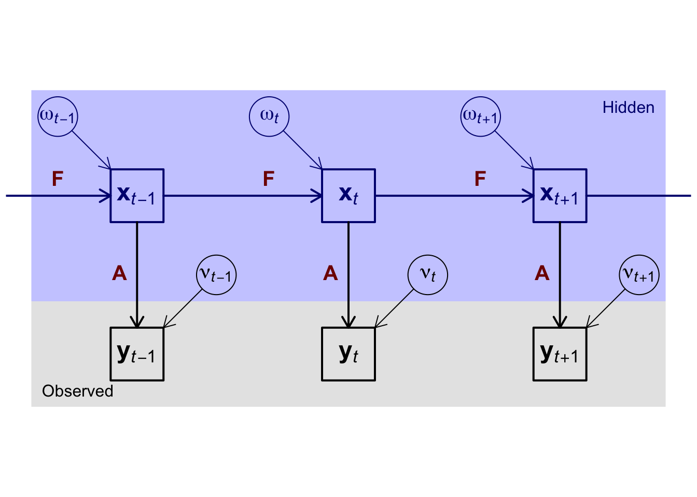

Code
par(mar=c(0,0,0,0)+0.3)
plot(x=c(0,12),y=c(1,7),type='n',xaxt='n',yaxt='n',xlab=NA,ylab=NA,bty='n',asp=1)
rect(c(0,0),c(1,3),c(12,12),c(3,7),col=c('#0000001f','#0000ff3f'),density=-1,lwd=0)
rect(c(1.5,5.5,9.5),rep(1.5,3),c(2.5,6.5,10.5),rep(2.5,3),lwd=2)
rect(c(1.5,5.5,9.5),rep(4.5,3),c(2.5,6.5,10.5),rep(5.5,3),lwd=2,border='#00007f')
symbols(x=c(0.5,3.5,4.5,7.5,8.5,11.5),y=rep(c(6.5,3.5),times=3),circles=rep(0.375,6),
add=TRUE,fg=rep(c('#00007f','#000000'),times=3),inches=FALSE)
arrows(x0=0.5+sqrt(2)/2*0.375+c(0,4,8),y0=7-0.5-sqrt(2)/2*0.375,
x1=1.5+c(0,4,8),y1=5.5,length=0.125,col='#00007f')
arrows(x0=3.5-sqrt(2)/2*0.375+c(0,4,8),y0=7-3.5-sqrt(2)/2*0.375,
x1=2.5+c(0,4,8),y1=2.5,length=0.125)
arrows(x0=2.5+c(-4,0,4,8),y0=5,x1=5.5+c(-4,0,4,8),lwd=2,length=0.125,col='#00007f')
arrows(x0=2+c(-4,0,4,8),y0=4.5,y1=2.5,lwd=2,length=0.125)
text(x=0.5+c(0,4,8),y=6.5,labels=c(expression(bold(omega)[italic(t-1)]),expression(bold(omega)[italic(t)]),expression(bold(omega)[italic(t+1)])),col='#00007f',cex=1.25)
text(x=2+c(0,4,8),y=5,labels=c(expression(bold(x)[italic(t-1)]),expression(bold(x)[italic(t)]),expression(bold(x)[italic(t+1)])),col='#00007f',cex=1.5)
text(x=3.5+c(0,4,8),y=3.5,labels=c(expression(bold(nu)[italic(t-1)]),expression(bold(nu)[italic(t)]),expression(bold(nu)[italic(t+1)])),cex=1.25)
text(x=2+c(0,4,8),y=2,labels=c(expression(bold(y)[italic(t-1)]),expression(bold(y)[italic(t)]),expression(bold(y)[italic(t+1)])),cex=1.5)
text(x=0.5+c(0,4,8),y=5,labels=expression(bold(F)),pos=3,col='#7f0000',cex=1.25)
text(x=2+c(0,4,8),y=3.5,labels=expression(bold(A)),pos=2,col='#7f0000',cex=1.25)
text(0.2,1.2,labels='Observed',adj=c(0,0))
text(11.8,6.8,labels='Hidden',adj=c(1,1),col='#00007f')